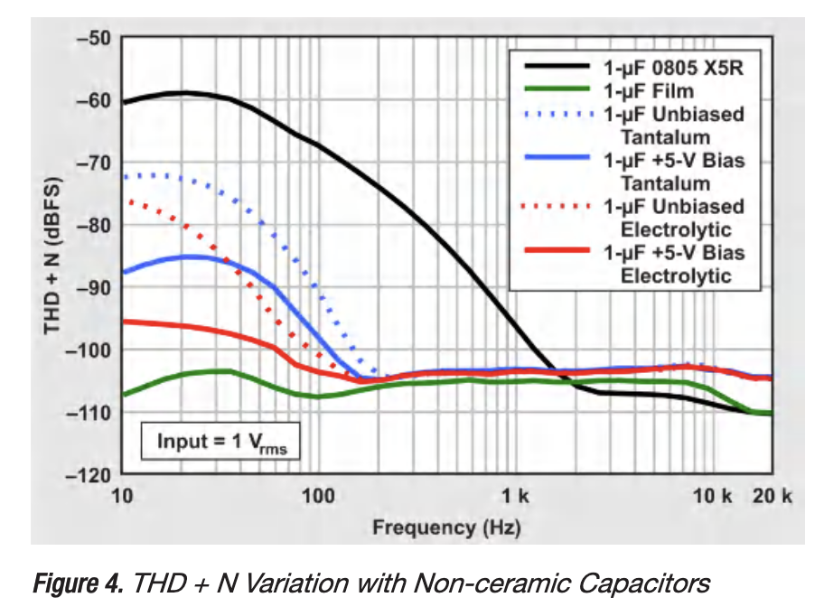
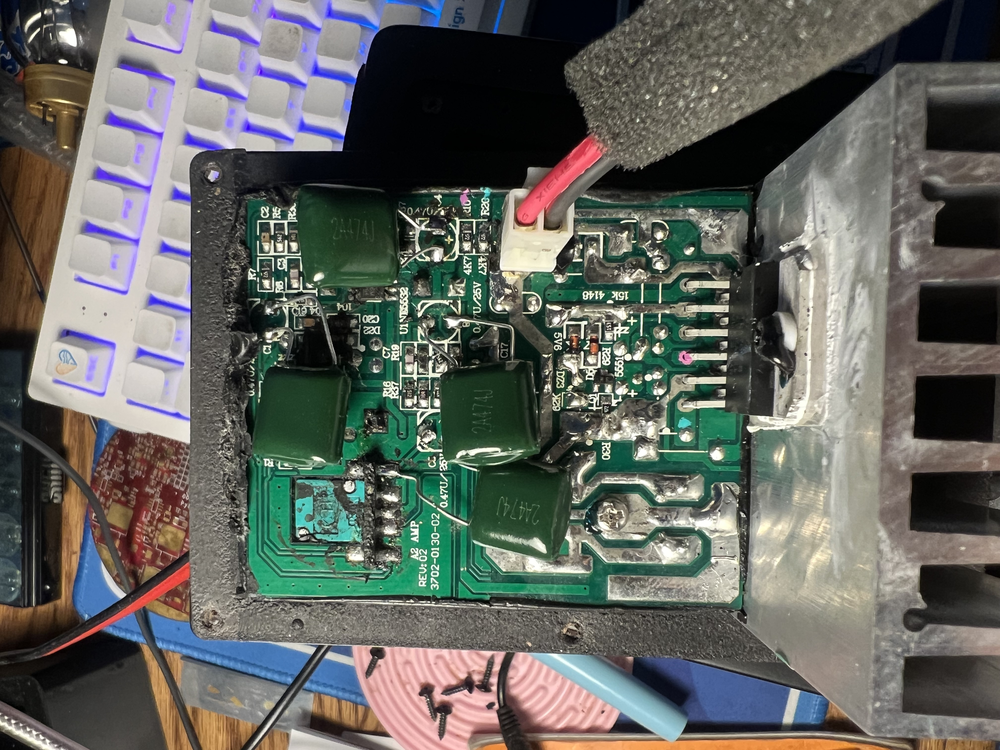

Latest Update: 06 JUN 2026
I repaired my Audioengine A2 speakers for a second time after the output became very quiet. I had previously repaired these speakers when the solder joints on the volume potentiometer/on switch failed, so this was my second time opening them up to fix the innards. These speakers are definitely value-engineered, but they have pretty decent sound quality for desktop speakers, so I'm motivated to keep them alive for my work desk. Audioengine has since released the A2+ model, which incorporates Bluetooth and a power supply into the speaker body, but hopefully this page will help other folks who run into a similar problem with their original A2 speakers.
The output of the speakers got quieter over time. It took me a while to notice, since obviously these aren't the biggest speakers in the world, but eventually I opened them up to see if I could find a problem and get a little more output volume. Eventually, I found several DC blocking electrolytic capacitors in the signal chain: C1, C4, C5, C8. These are all 0.47 µF, 50 V capacitors; two of them are between the volume potentiometer and the preamp, and two more are before the power amp. Electrolytics are really not the best choice in this application. Over time the wet electrolyte inside dries out, leading to increased ESR, which was the problem in this case. The gold standard of audio capacitors is film capacitors (polyester or polypropylene are the dielectric material), which are at least an order of magnitude more expensive than other capacitor dielectric technologies.

Luckily for a one-off repair, we don't care about cost! I replaced all of the problematic capacitors with film capacitors. You'll notice in the picture below that I put small blue and pink paint pen dots to help me trace each channel's signal path. These boards come from the factory partially potted with a black hot glue material, which was luckily easier to scrape off than an epoxy would've been.

The A2s work great now. I'm not sure that I would notice any actual audio quality improvement between fresh electrolytics and these massive film caps, but if I'm going to the effort to replace them, I might as well use the best components available.